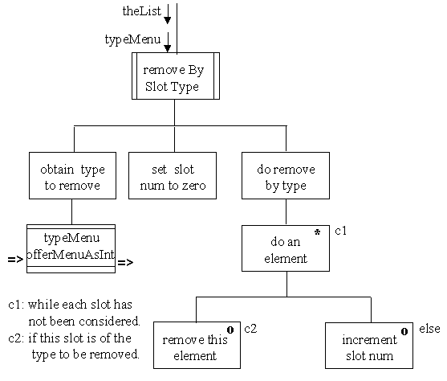

To fourth iteration of the RadioShow source code is available and should replace the third iteration version. (It will require renaming to accomplish this!)


Install the fourth version of the RadioShow code and demonstrate its correct implementation. (Remember to preserve the ammended third version so that the methods developed in the previous exercises can be re-included.)
Provide an option to remove all slots of a particular type from the list, using the following design.

The slotNum local variable will be crucial to this implementation. Condition 1 will be true when it is greater than the size of the list and hence the iteration will terminate. Within the body of the while loop the value of this variable should only be incremented if an slot is not removed. If a slot is removed then all the following slots will be moved down one location and if the value of slotNum were incrmented in this case it would skip over one of the slots. The Vector remove( ) method takes a single integer argument and removes the lement at that location throwing an ArrayIndexOutOfBoundsException if the value is too large or small.